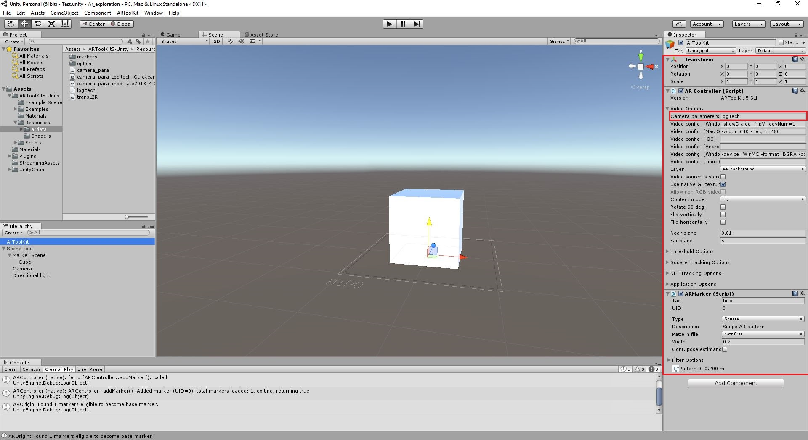
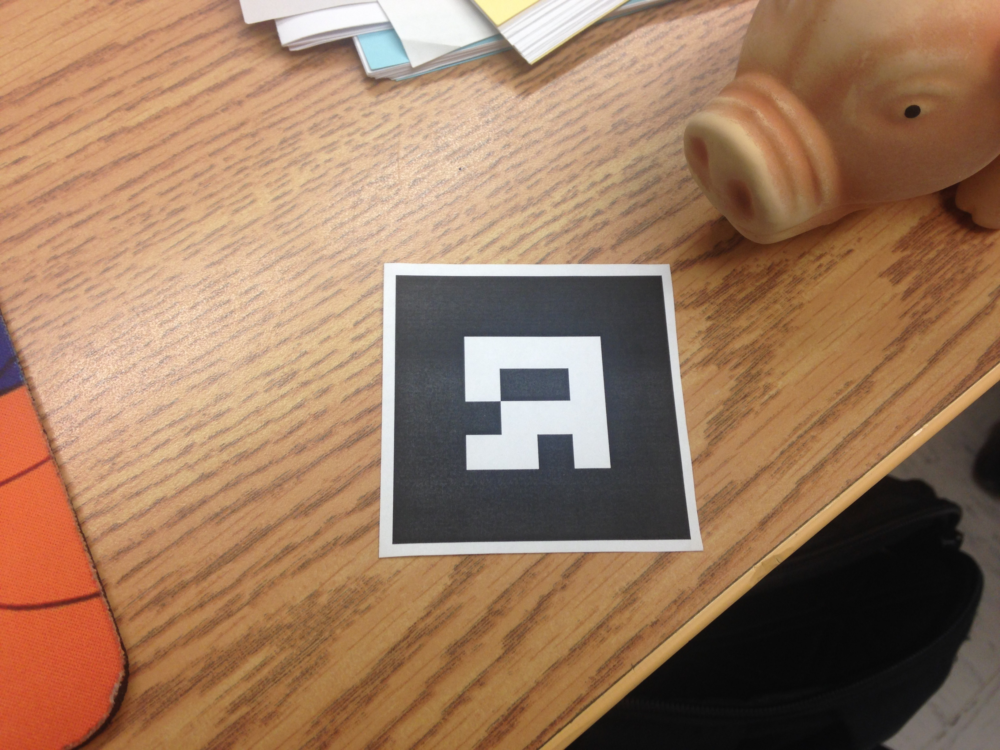

26 Janvier 2016
La calibration de caméra
Aujourd’hui, William s’est concentré sur la calibration de la caméra. ArToolKit nous fournit un outil de calibration. Il faut tout d’abord imprimer une feuille nommée « Calibration Chessboard ». Cette feuille nous servira de marqueur. Ensuite, en utilisant l’application « calib_camera.exe » nous pouvons commencer à calibrer notre caméra. En fait, il manque certains réglages qu’il faut spécifier à l’application avant de commencer. En ouvrant un invite de commande dans le dossier de l’application, nous spécifions le nom de l’exécutable, ainsi que les paramètres que nous voulons lui donner.
calib_camera.exe --vconf "-devNum=3 -flipV"
« -vconf » nous permet de spécifier les paramètres de la caméra. Donc, « devNum=3 » spécifie quelle caméra sera utilisée pour la calibration. Pour une raison obscure, la web caméra de recherche était la troisième alors qu’il n’y a que deux caméras sur l’ordinateur de William. Nous pensons que c’est un autre périphérique qui est détecté en tant que web caméra par l’application. Ensuite, « flipV » signifie qu’on applique une rotation en vertical à la caméra. Pour une (autre) raison obscure, la caméra capturait l’image vidéo à l’envers.
Maintenant que la partie plus ou moins ennuyante est terminée, passer aux choses sérieuses : la calibration ! Vous vous rappelez de l’image nommée « Calibration Chessboard » dont nous avons fait mention tout à l’heure ? Et bien la voilà :

Cette image ressemble étrangement à un jeu d’échecs. Ici, nous utilisons les coins des carrés qui se touchent. L’application, à l’aide de la caméra, essaie de trouver et d’identifier les 35 points. Si c’est possible, le texte sur l’application devient rouge et nous pouvons, capture notre première image.

Si un ou plusieurs des coins ne sont pas détecté par la caméra, tous les coins détectés et le texte seront affichés en vert, ce qui signifie qu’il faut bouger la feuille quadriller jusqu’à ce que tous les coins soient détectés.
Quand nous comprenons le placement de la feuille quadrillée, il suffit de prendre dix captures à l’aide du bouton « espace » dans plusieurs angles pour créer un fichier binaire contenant les informations de calibration de la caméra. Après avoir pris les dix captures, l’application nous demande de donner un nom au fichier.
Pour finir, il ne reste qu’à placer le fichier de calibration dans le projet Unity où se trouve le fichier de calibration par défaut. Il est important de changer le format du fichier, qui est « .dat » en « .bytes », car ArToolKit li le fichier dans ce format. Il faut aussi spécifier le nom du fichier dans l'éditeur Unity.
Principe de détection de la caméra
Afin de pouvoir mieux comprendre comment l’application fonctionne, Vincent a recherché sur l’algorithme de détection d’ARToolKit. La première étape de détection des marqueurs commence par une capture d’écran à partir de la caméra.
À partir de cette image, le programme fera une image binaire en noir et blanc
Ensuite, les couleurs de l’image seront inversés afin de pouvoir détecter le coté noir du marqueur et ensuite à l’aide du fichier binaire, trouver le contour du carré noir.
Ce contour est identifié, puis le programme compare le milieu du marqueur avec ses marqueurs préenregistrés. S’il trouve une correspondance, il confirme le marqueur.
Finalement, il dessine le model associé au model en modifiant l’orientation de la caméra en fonction de la position du marqueur.